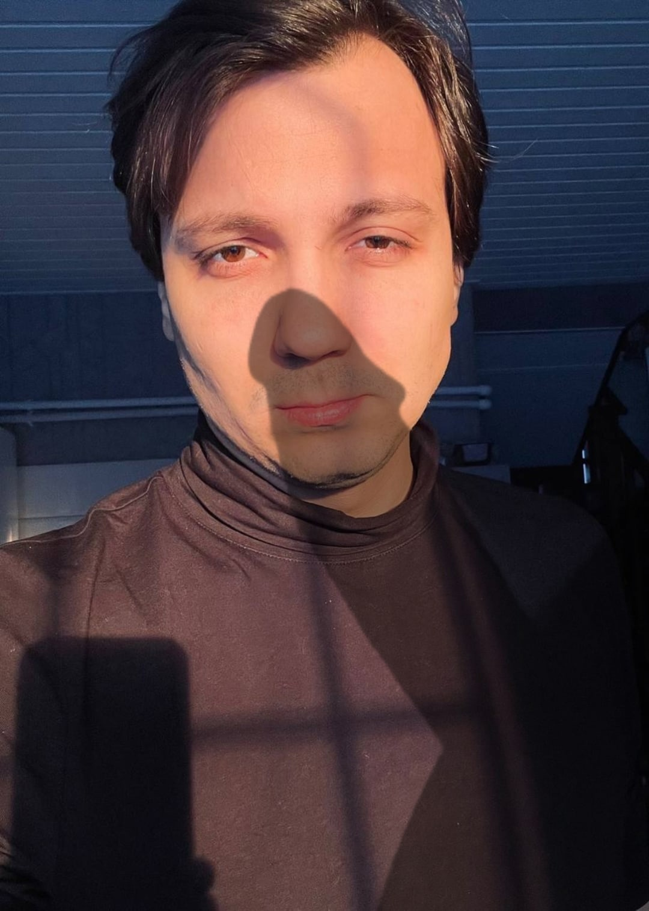

Привет, мои драгоценные подписчики! Сегодня произошла настоящая катастрофа! Старая бездарность обнаружила, что моя гитара "Кроликс" исчезла и теперь гоняется за мной по всему Агороду целый день! Я сижу в туалете сейчас и пишу этот пост.
Помогите, пожалуйста! Обновление: Он взял топор и угрожаетмне!Помогите, он может уничтожить мой блог!
06.03.2022, 15:00. Этот текст написан мной, Пеной, лично пять часов назад.
Но вся эта ситуация закончилась тем, что я должен вернуть Валерию Альбертовичу Жмышенко, владельцу гитары:
| Дата: | Сумма задолженности (рубли) |
|---|---|
| 20.06.2022 | 27 054 |
Иначе он возьмет с меня микрозайм на сумму 148 800 рублей, и коллекторы будут меня разыскивать по всей стране! Мой паспорт находится у него в сейфе с пиццей. Ребята, помогите, я не знаю, что делать! Я не хочу работать на заводе, я блогер! Помогите!!!

Несравненная Алина,
С 8 Марта поздравляю,
Счастья, теплоты улыбок
От души тебе желаю.
Праздник женский длится, Аля,
Пусть не день, а целый год,
Пусть сбываются желанья
И во всем тебе везет.
©Пена